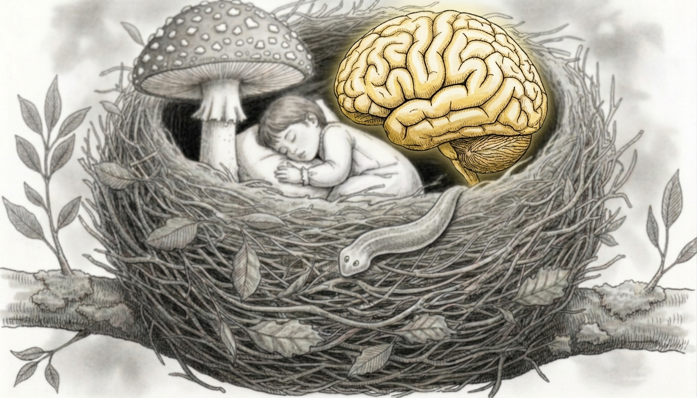

Lines of enquiry · Pl. 04
AI & the Brain

The ascent of generative AI (like Claude, Gemini, and ChatGPT) is likely leading to a fundamental change in the way we live in this world. Even though these artificial intelligence systems have only been known to the general public for a few years, their immediate impact is already unprecedented, with the consequences being felt in every branch of industry and academia alike. Generative AI undoubtedly has many positive effects. It can effectively automate relatively simple tasks and can help program complex analyses, which can save valuable time that might not even be possible without substantial investment. However, the potential negative impact has much less been addressed and may only become apparent after a longer time period.
Our research on AI focuses on understanding how AI affects our behaviour in terms of cognition and creativity, but also how it affects our interactions with others, particularly whether it influences polarization and stress in online discussions.